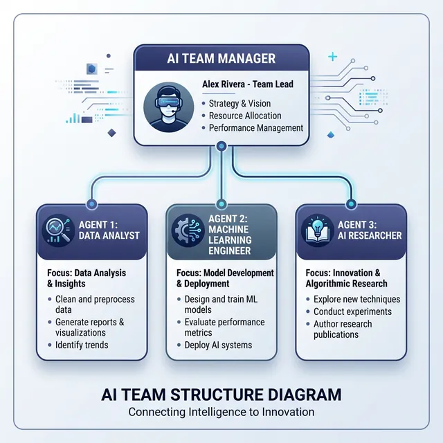

Claude CodeでAIチームを作った話 ～社長・マネージャー・担当3名の組織を1人で構築～
スキルファイルで「部下」を定義し、指示一発でブログ記事を書いて公開するまでを自動化した

はじめに：「AIに仕事を任せたい」という発想
1人でブログを運営しながら副業を回していると、どこかで壁に当たります。 「記事を書く・サイトを更新する・情報収集する」を全部自分でやるには、 物理的に時間が足りない。
そこで思ったのが「AIに役割を与えて、チームとして動かせないか」ということです。 精神論ではなく、仕組みで解決する。 Claude Codeのスキルファイルという機能を使えば、AIに「キャラクター」と「担当業務」を 定義できます。これを使って、階層型のAIチームを構築してみました。
この記事で作ったもの：
・team-manager：マネージャー（タスク分解・各担当への橋渡し）
・agent-content：コンテンツ担当（記事作成・HTML生成・git push）
・agent-system：システム担当（ファイル操作・サーバー管理・スクリプト実行）
・agent-research：リサーチ担当（情報収集・ファクトチェック・まとめ）
1. チーム構成を設計する
「社長は自分」という整理
チームの構造はシンプルに決めました。
AIチームの階層構造
各担当の役割説明
コンテンツ担当（agent-content）は、ブログ記事のHTML作成・アフィリエイトリンクの挿入・ sitemap.xmlとindex.htmlの更新・git pushまでを一括で担います。 記事公開の一連の作業を任せられる「編集長」のような役割です。
システム担当（agent-system）は、ローカルサーバーの起動・終了・ファイル整合性の確認・ 設定ファイルの管理など、裏側のインフラ作業を担当します。 「何かが動かなくなったら呼ぶ担当」です。
リサーチ担当（agent-research）は、記事のネタに対してファクトチェックをかけ、 参考情報を集めてまとめます。「書く前に裏取りをする担当」として機能します。
「社員は増やさない方がいい」理由
当初は「デザイン担当」や「SNS担当」も作ろうと考えていましたが、やめました。 理由は明快です。役割が曖昧になると、誰に何を頼めばいいかわからなくなるからです。
今の3名でカバーできない仕事は、マネージャーか自分（社長）が判断して 既存の担当に振るか、一時的に臨時対応させれば足ります。 チームは小さく保つほど管理コストが下がります。
2. スキルファイルで「部下」を定義する
Claude Codeのスキルとは
Claude Codeには「スキル」という概念があります。
SKILL.mdというMarkdownファイルにロールと行動規範を書いておくと、
そのスキルを呼び出したときにClaude Codeがそのキャラクターとして動いてくれます。
スキルファイルは ~/.claude/skills/ ディレクトリ以下に配置します。
Claude Codeがそのディレクトリを読み込み、スキル名でいつでも呼び出せる状態になります。
# スキルファイルの配置構造
~/.claude/skills/
├── team-manager/
│ └── SKILL.md ← マネージャーの役割・行動規範を記述
├── agent-content/
│ └── SKILL.md ← コンテンツ担当の役割・作業手順を記述
├── agent-system/
│ └── SKILL.md ← システム担当の役割・作業手順を記述
└── agent-research/
└── SKILL.md ← リサーチ担当の役割・作業手順を記述SKILL.mdに書くこと
SKILL.mdには「このエージェントは何をする担当か」「どう動くか」「何を優先するか」を Markdownで記述します。例えばコンテンツ担当のSKILL.mdには以下のような内容を書きます。
# コンテンツ担当（agent-content）
## 役割
ブログ記事の作成・HTML生成・公開までを担う。
## 作業の流れ
1. 既存記事のフォーマットを確認する
2. 記事HTMLを生成する（Tailwind CSS、アフィリエイトリンク挿入）
3. sitemap.xml を更新する
4. index.html のブログカード一覧を更新する
5. git add → commit → push で公開する
6. 完了報告をする
## 制約
- 確認なしで一括実行する（許可が下りた前提で動く）
- Amazonアソシエイト ID: otitukanaihit-22CLAUDE.mdとスキルファイルの関係
CLAUDE.mdはプロジェクト全体の指示書です。「このリポジトリでは何をするか」
「どんな制約があるか」を書きます。一方、スキルファイルは「この担当エージェントは
どう動くか」という個人レベルの仕様書です。
CLAUDE.md vs SKILL.md：
CLAUDE.md → プロジェクトの共通ルール・制約・技術スタック（全員が読む就業規則）
SKILL.md → 各担当エージェントの役割・行動規範（個人の業務マニュアル）
3. ダッシュボードで進捗を見える化
agent-demoとの連携
各エージェントが今何をしているかをリアルタイムで把握するため、 Python HTTPサーバーとブラウザUIを組み合わせたダッシュボードを用意しました。
仕組みはシンプルです。各エージェントは作業の各ステップで
~/agent-demo/status/ 以下のJSONファイルを更新します。
ブラウザ側はそのJSONをポーリングして画面に反映します。
# エージェントがステップ開始時にJSONを更新するコマンド
python -c "
import json, datetime, os
base = os.path.expanduser('~') + '/agent-demo/status/'
d = json.load(open(base + 'agent_2.json', encoding='utf-8'))
d['progress'] = '[記事HTML作成中]'
d['updated_at'] = datetime.datetime.now().isoformat()[:19]
open(base + 'agent_2.json', 'w', encoding='utf-8').write(
json.dumps(d, ensure_ascii=False, indent=2)
)"
# ブラウザで確認
# http://localhost:8080これによって自分がブラウザを開いておくだけで、 「今どのエージェントが何の作業をしているか」が一目でわかります。 マネージャーも各担当のJSONを集約して全体の進捗を把握できます。
「許可を何度も求められる問題」の解決
Claude Codeは安全のため、ファイル操作やコマンド実行の前に確認を求めます。 これが毎回発生すると、自動化の意味が薄れてしまいます。
解決策は settings.json の permissions 設定です。
許可する操作をあらかじめ定義しておくと、対象の操作は確認なしで実行されます。
// ~/.claude/settings.json（例）
{
"permissions": {
"allow": [
"Bash(git *)",
"Bash(python *)",
"Write(*)",
"Edit(*)"
]
}
}
注意：
許可する操作は必要最小限に絞ることを推奨します。
Bash(*) のように全コマンドを許可すると、
意図しない操作が実行されるリスクがあります。
操作ごとに具体的なパターンを指定するのが安全です。
4. 実際に動かした結果
指示はたった一行
チームが整ったら、マネージャースキルを呼び出して指示を出します。
# Claude Codeでマネージャースキルを使って指示
/skill team-manager
「ブログネタ（blog_idea_statusline.md）を見て、
ファクトチェックして、記事を書いて、公開して」マネージャーがこの指示を受け取ると、タスクを分解して各担当に振り分けます。
マネージャーが分解したタスクの流れ
- リサーチ担当へ：blog_idea_statusline.mdの内容をファクトチェックし、補足情報をまとめる
- コンテンツ担当へ：ファクトチェック結果を踏まえて記事HTMLを作成し、sitemap・indexを更新してpush
- マネージャーが結果を集約：各担当の完了報告を受け取り、自分（社長）に最終報告
リサーチ担当がファクトチェック
リサーチ担当がブログネタのMarkdownを読み込み、 記事に含まれる技術的な情報（コマンドの正確性・バージョン情報・外部リンクの有効性など）を 確認してまとめます。この結果がコンテンツ担当に渡されます。
コンテンツ担当が記事作成・pushまで完走
コンテンツ担当がリサーチ結果を受け取り、既存記事のフォーマットに合わせてHTMLを生成。 sitemap.xmlとindex.htmlを更新し、git pushまで完走します。 自分がやることはほぼゼロです。
実際に動いた結果：
指示から公開まで、自分が介入したのはマネージャーへの最初の一行だけでした。
ダッシュボードを眺めながらコーヒーを飲んでいる間に、記事が公開されました。
5. まとめ：AIチームを持つことの価値
「呼んだら動く部下」という現実的な定義
AIチームは24時間常駐する従業員ではありません。 正確には「呼んだときだけ動く、役割を持った専門家」です。 常時稼働のコストもなく、給与も不要。呼べば即動き、終わったら待機する。 これが現実的なAIチームの定義だと思っています。
精神論ではなく仕組みで解決する
「もっと頑張る」「時間を作る」ではなく、 やる仕組みを作って、そこに流し込む。 スキルファイルはまさにその「仕組み」の核心部分です。 一度作れば、同じタスクは何度でも同じクオリティで処理されます。
AIチーム構築のポイント まとめ
- 役割を明確にする — 「誰が何をするか」を曖昧にしない。担当が重複すると混乱する
- スキルは小さく保つ — 3〜4名で回せるなら増やさない。管理コストが増えるだけ
- 進捗の可視化は最初から設計する — ダッシュボードがないと「今何が起きているか」が把握できなくなる
- 許可設定を事前に整える — 毎回の確認ダイアログは自動化の最大の敵。settings.jsonで解決する
- 指示は一行で済むように設計する — 細かい手順をスキルファイルに書き込んでおけば、社長は大方針だけ示せばいい
Claude Codeのスキルファイルは、使い慣れると「自分専用のチーム」を 少しずつ育てていく感覚があります。 一度動かして、うまくいったところと失敗したところを見直して、 またスキルファイルを更新する。そのサイクルが回り始めると、 AIチームはどんどん使いやすくなっていきます。